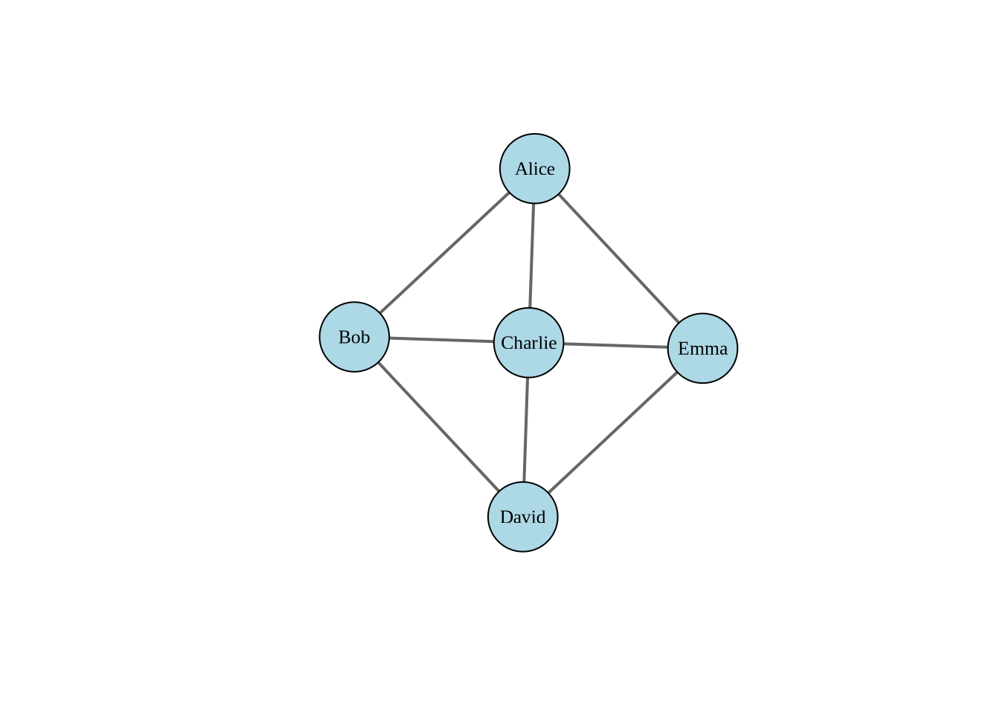
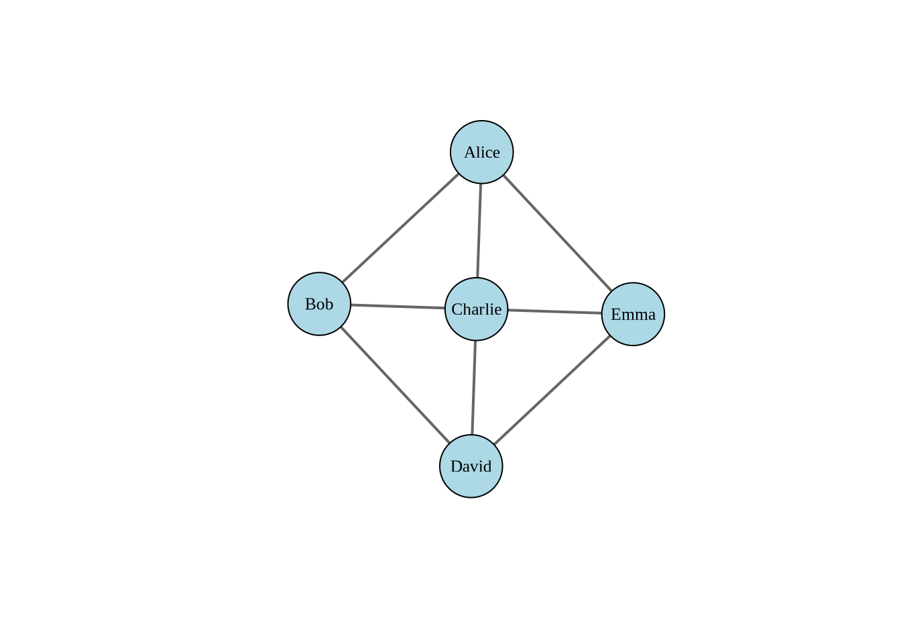
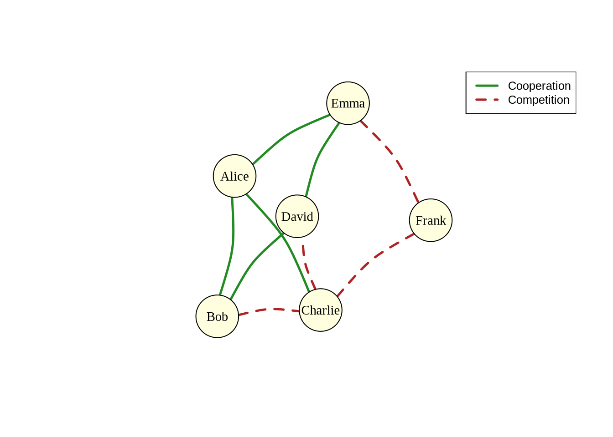
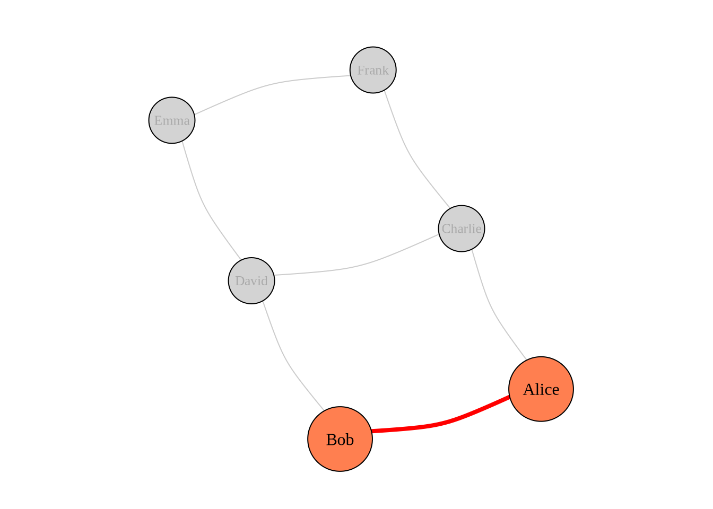
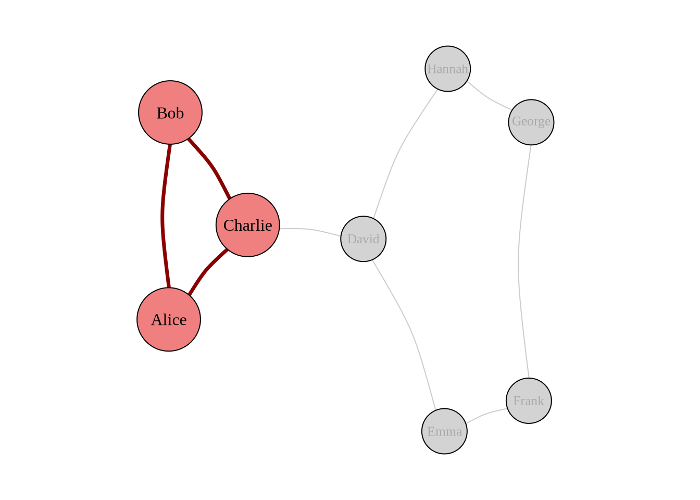

Essential Terms and Concepts
A graph is a mathematical structure consisting of a set of objects (vertices) and a set of connections (edges) between pairs of these objects. In network analysis, graphs provide the fundamental framework for representing relationships and interactions between entities. Graphs can be directed (edges have direction) or undirected (edges have no inherent direction).
\[ G = {v, e} \]
where
\[v = [v_1, v_2, ..., v_i, ... v_n]\]
and
\[e = [(v_1, v_2), (v_1, v_i), ..., (v_i, v_j), ..., (v_j, v_n)]\]
Vertices (also called nodes) are the fundamental units or entities in a network. They represent the objects being studied, such as:
Each vertex can have attributes (e.g., age, location, type) that provide additional information about the entity it represents.
Edges (also called links or ties) represent the connections or relationships between vertices. They encode the interactions, associations, or dependencies between entities in the network. Edges can have various properties:
A network relationship defines the nature of connections between entities in a network. These relationships determine:
One-mode networks (also called unipartite networks) contain only one type of vertex. All connections occur between vertices of the same type. Examples include:
Here’s an example of creating a one-mode network visualization concerning a collaboration network among five co-workers:

Directed networks (also called digraphs) have edges with a specific direction, indicating asymmetric relationships where the connection flows from one vertex to another. Examples include:
Here’s an example of a directed network:
Undirected networks have edges without direction, representing symmetric relationships where connections are mutual. Examples include:
The choice between directed and undirected representation depends on whether the relationship being modeled is inherently asymmetric or symmetric.
Two-mode networks (also called bipartite networks) contain two distinct types of vertices, and edges only connect vertices of different types. Examples include:
Here’s an example of a two-mode purchasing network:
Signed networks are networks where edges carry positive or negative values, representing different types of relationships:
Signed networks are particularly useful for studying:
Here’s an example of a signed social network like cooperative Vs. competitive ties among co-workers:

Weighted networks have edges with numerical values (weights) representing the strength, frequency, or capacity of connections. Examples include:
Here’s an example of a weighted communication network:
Unweighted networks (also called binary networks) have edges that simply indicate the presence or absence of a connection. All edges are treated equally, focusing on the topology rather than connection strength. These are simpler to analyze but may lose important information about relationship intensity.
A dyad is the simplest possible network substructure, consisting of a pair of vertices and the possible edge(s) between them. In directed networks, dyads can be classified as:
Dyadic analysis examines pairwise relationships and forms the foundation for understanding reciprocity and basic network patterns.
Here’s a visualization showing a dyad within a larger network:

A triad consists of three vertices and the possible edges among them. Triads are fundamental for understanding:
Here’s a visualization showing a triad within a larger network:

We will deal with these in weeks 4 and 5.